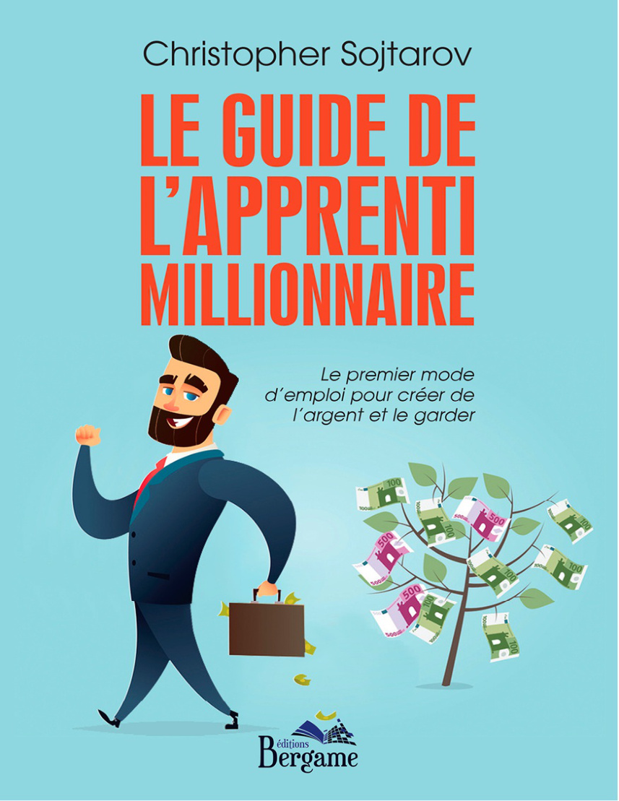

vie-et-societe
Le guide de l’apprenti millionnaire


Carte d’identité
- Auteur
- Christopher Sojtarov
- Genre
- vie-et-societe
- Éditeur
- Éditions Bergame
- Année
- 2018
- ISBN
- Non confirmé
- Fichier
- 379 pages PDF
Résumé du livre
L’auteur mêle expérience personnelle, motivation, gestion des obstacles et stratégies qu’il présente comme favorables à la réussite financière. Les promesses de richesse sont celles de l’auteur, non des résultats garantis.
Sections et chapitres · 101 repères paginés
Synthèses extractives de repérage fondées sur le texte des sections. Elles ne remplacent pas des résumés analytiques exhaustifs.
01PRÉFACEPDF p. 4
PRÉFACE Avant tout, je tiens à vous encourager à prendre le temps d’entreprendre cette démarche qui vous permettra de relever de nouveaux défis dans votre vie professionnelle avec assurance ! Se procurer du matériel pour se développer est une chose, l’utiliser et le mettre en application…
Lire à cette page ↗02LA DÉCISION DE L’APPRENTI MILLIONNAIREPDF p. 5
LA DÉCISION DE L’APPRENTI MILLIONNAIRE Aux quatre coins du globe, dans un monde où le commun des mortels fouille le fond de ses poches pour finir son mois avec dignité, il existe leur total opposé : cette catégorie festoie au banquet de la prospérité et leur vie ressemble à une fête qui…
Lire à cette page ↗03CALCULEZ VOTRE POTENTIEL ET ALLEZ DE L’AVANTPDF p. 12
CALCULEZ VOTRE POTENTIEL ET ALLEZ DE L’AVANT En tant que futur millionnaire vous devez impérativement savoir où vous vous situez dans votre potentiel de réussite future. Admettons que vous soyez jeune, vif, avide de savoir, plein d’énergie et débordant d’imagination : votre taux de…
Lire à cette page ↗04LES OBSTACLES VERS LA RÉUSSITEPDF p. 15
LES OBSTACLES VERS LA RÉUSSITE Sur la route vers votre future prospérité il y aura, comme vous vous en doutez sûrement, une multitude d’obstacles, sinon ce serait trop facile. Évidemment, ce chapitre est écrit de façon préventive afin de vous armer. Les obstacles varient souvent d’une…
Lire à cette page ↗05LES HABITUDESPDF p. 25
Les habitudes constituent dans notre vie de puissants facteurs, parce qu’elles sont des modèles logiques, souvent ignorés du conscient. Elles expriment notre caractère et engendrent notre efficacité (ou notre inefficacité). Et comme dit Aristote « Nous sommes ce que nous répétons chaque…
Lire à cette page ↗06SE CONNAÎTREPDF p. 26
SE CONNAÎTRE Je suis toujours surpris par le nombre de personnes qui me disent : « Je suis comme ça, et puis c’est tout ! » Elles sont convaincues que leur caractère est établi définitivement et ne peut plus changer. Ce qui fait qu’elles n’ont jamais remis en question leur personnalité.…
Lire à cette page ↗07LA GESTION DU TEMPSPDF p. 31
LA GESTION DU TEMPS Si vous êtes dans la moyenne, vous passez huit heures par jour à dormir, huit heures par jour à travailler. Trois heures par jour à regarder la TV, ça fait déjà 19 heures… Oui, 19 heures sur 24, déjà prises seulement par trois activités : dormir, travailler, regarder…
Lire à cette page ↗08LE POUVOIR DE L’OBJECTIFPDF p. 63
LE POUVOIR DE L’OBJECTIF Ceux qui arrivent à changer le cours de leur vie parlent souvent des bénéfices apportés par l’atteinte de leurs objectifs. En revanche, ceux qui se focalisent sur les conséquences négatives de leurs éventuels échecs ont plus de mal à atteindre leur but, voire…
Lire à cette page ↗09IL VOUS FAUT DONC UN OBJECTIF LE PLUS PRÉCIS POSSIBLE !PDF p. 66
C’est un objectif avec un montant et un délai à respecter pour l’atteindre. Imaginez ceci : Un représentant de la succession d’un membre de votre famille, que vous avez perdu de vue depuis longtemps, vous annonce que vous avez hérité d’un million d’euros (ce qui correspondra à votre…
Lire à cette page ↗10VOYEZ GRAND ET ATTENDEZ-VOUS AU SUCCÈS :PDF p. 67
VOYEZ GRAND ET ATTENDEZ-VOUS AU SUCCÈS : Le pouvoir de l’objectif Il faut que vous vous trouviez tout d’abord un adjectif, celui-ci devrait être audacieux et démesuré, pour ça n’hésitez pas à voir grand et à établir une liste de tous les facteurs qui pourront empêcher d’atteindre votre…
Lire à cette page ↗11PRENDRE DES ENGAGEMENTSPDF p. 73
PRENDRE DES ENGAGEMENTS Il est grand temps de passer à l’action, voulez-vous ? Nous sommes paresseux, capables de trouver des centaines de raisons pour éviter de commencer ce qui nous permettrait pourtant d’obtenir ce que nous voulons. Si vous faites partie de ceux qui commencent les…
Lire à cette page ↗12SURMONTER LES OBSTACLES AU SUCCÈS :PDF p. 78
SURMONTER LES OBSTACLES AU SUCCÈS : C’est souvent parce que nous ne parvenons pas à identifier et à renverser les difficultés que le succès reste hors de portée. Vouloir réellement que le projet se concrétise et se motiver suffisamment pour que l’effort en vaille la peine sont les deux…
Lire à cette page ↗13FAIRE EN SORTE QUE LE MEILLEUR ADVIENNEPDF p. 79
FAIRE EN SORTE QUE LE MEILLEUR ADVIENNE Si vous ne relevez pas les obstacles de votre projet, ils bloqueront tout changement et vous décourageront ou vous démotiveront. En développant les stratégies nécessaires pour traiter les difficultés, les obstacles cesseront de vous…
Lire à cette page ↗14REPÉRER ET PRÉPARER LES PREMIERS PASPDF p. 80
REPÉRER ET PRÉPARER LES PREMIERS PAS S’il est utile de tracer un horizon, c’est avant tout pour imaginer votre nouvelle situation. Au lieu de préparer un plan d’action détaillé qui vous expliquera comment atteindre votre but, comme dans les méthodes traditionnelles, la visualisation des…
Lire à cette page ↗15MON PREMIER SOUS OBJECTIF EST DE… ??PDF p. 81
Je crois pouvoir atteindre cet objectif parce que… Pour atteindre cet objectif, je vais… Je me fixe une date limite qui est le… Ma récompense sera… Énumérez trois des principaux bénéfices ou améliorations apportés à votre quotidien et à celui de vos proches. Projetez-vous dans l’avenir,…
Lire à cette page ↗16GARDER LE CAP :PDF p. 83
GARDER LE CAP : Imaginez que vous vous soyez toujours comporté de manière passive face à votre patron. Un jour, vous optez pour un changement et vous commencez à dire non quand il vous réclame des heures supplémentaires. Vous le faites de manière ferme, en proposant un compromis : vous…
Lire à cette page ↗17LA VRAIE HISTOIRE DE ROCKY :PDF p. 85
LA VRAIE HISTOIRE DE ROCKY : En 1974, Sylvester Stallone était un acteur et un écrivain découragé et fauché, qui vivait à New York. Un jour qu’il assistait à un match de boxe, il a été inspiré par un boxeur peu connu qui affrontait le grand Mohamed Ali. Le boxeur inconnu avait envoyé le…
Lire à cette page ↗18CONNAISSEZ-VOUS L’HISTOIREDES DEUX GRENOUILLES ?PDF p. 87
Vous connaissez peut-être cette histoire grâce au film Attrape-moi si tu peux. Il était une fois deux petites grenouilles qui tombèrent dans un pot de crème. La première grenouille, voyant qu’il n’y avait pas moyen de prendre pied dans le liquide blanc, accepta son sort et se…
Lire à cette page ↗19AVANTAGES ET OBSTACLES ÉVENTUELS :PDF p. 88
AVANTAGES ET OBSTACLES ÉVENTUELS : Avantages 1) Le premier avantage, c’est que votre subconscient se met à fonctionner selon la loi universelle : ce que l’esprit peut concevoir et croire, l’esprit peut l’obtenir. Celui-ci se confortera telle une loupe qui canalisera et concentrera votre…
Lire à cette page ↗20FÊTER LE SUCCÈS :PDF p. 94
Bien souvent, nous terminons un projet et nous nous embarquons dans le suivant sans prendre le temps de respirer. Nous pouvons aussi tomber dans le piège de ceux qui sous- estiment leur réussite en l’attribuant à la chance ou en minimisant les compétences qu’il aura fallu pour concrétiser…
Lire à cette page ↗21RÉSUMÉ DU CHAPITRE :PDF p. 95
RÉSUMÉ DU CHAPITRE : – Fixez-vous des objectifs ambitieux : voyez grand. Votre enthousiasme éperonnera votre désir de réussir et de relever un défi. – Soyez précis dans la description de vos objectifs. Une affirmation claire et précise peut vous aider à rester concentré. – Écrivez vos…
Lire à cette page ↗22LE PUISSANT EFFET DE LEVIERD’UNE RELATION AVEC UN MENTORPDF p. 97
LE PUISSANT EFFET DE LEVIER D’UNE RELATION AVEC UN MENTOR Newton a dit : « Si je me suis retrouvé si haut, c’est que j’étais hissé sur les épaules de géants… » Le dictionnaire définit le mot « mentor » comme suit : « guide, conseiller sage et expérimenté ». Lorsqu’il part pour la guerre…
Lire à cette page ↗23VOICI POURQUOI IL EST INDISPENSABLE D’AVOIR UN MENTOR :PDF p. 98
VOICI POURQUOI IL EST INDISPENSABLE D’AVOIR UN MENTOR : Premièrement, un mentor donne une perspective : Souvent nous ne pouvons voir les choses objectivement, car nous en sommes trop près. Nous sommes pris dans les émotions que soulève la situation : La peur, l’excitation,…
Lire à cette page ↗24À QUOI SERT UN MENTOR ?PDF p. 100
À QUOI SERT UN MENTOR ? 1)Accélérer de manière extraordinaire l’apprentissage de son protégé en lui révélant le fruit de son expérience. 2)Lui éviter des erreurs coûteuses, malgré le fait d’avoir prévenu son protégé (pour ma part je déteste quand on me dit « je te l’avais dit…
Lire à cette page ↗25APPLIQUER L’EFFET DE LEVIER MAXIMAL À L’AIDE D’UN MENTOR :PDF p. 101
APPLIQUER L’EFFET DE LEVIER MAXIMAL À L’AIDE D’UN MENTOR : Seul, vous n’avez pas d’effet de levier. Il vous faut alors compter sur vos connaissances, vos expériences et vos ressources personnelles ainsi que sur votre propre argent. Vos ressources finissent par s’épuiser : vous vous…
Lire à cette page ↗26COMMENT TROUVER SON MENTOR ?PDF p. 102
Ainsi va le dicton : « Lorsque l’élève est prêt, le professeur apparaît ». Parce que quand l’élève s’engage, il prend soudainement conscience des professeurs et des mentors autour de lui. Il en existe trois types : Les mentors issus d’un heureux hasard, les mentors accessibles et les…
Lire à cette page ↗27LES RÈGLES DU MENTOR :PDF p. 105
LES RÈGLES DU MENTOR : 1) Les mentors même retraités ont souvent beaucoup de choses à faire. Donc, n’abusez pas de leur temps, car il est précieux, et surtout comprenez qu’ils n’ont pas que ça à faire, soyez patient. 2) Soyez audacieux, créatif dans la manière de les aborder.…
Lire à cette page ↗28LE MODÈLE DU MENTORAT :PDF p. 108
LE MODÈLE DU MENTORAT : Étudiez la vie de tous les grands personnages et vous découvrirez que chacun a fait son apprentissage chez un ou plusieurs maîtres. Ainsi, si vous désirez devenir un grand personnage reconnu qui obtient beaucoup de succès, vous devez être l’apprenti d’un maître.…
Lire à cette page ↗29CHERCHER QUELQU’UN DANS VOTRE DOMAINE :PDF p. 109
CHERCHER QUELQU’UN DANS VOTRE DOMAINE : Cherchez quelqu’un dans votre secteur géographique, possédant l’expérience dans le domaine que vous voulez développer, et assurez-vous des affinités. Vous aurez la responsabilité d’être prêt à recevoir les conseils du meneur et à reconnaître vos…
Lire à cette page ↗30Y A-T-IL UN RACCOURCI VERS LA RICHESSE ?PDF p. 110
Y a-t-il un chemin plus direct et plus rapide que la voie ordinaire ? L’homme qui a emprunté un raccourci connaît l’endroit où celui-ci débouche. Mais, pour l’atteindre, il faut prendre le départ sans s’occuper des accidents du terrain et des obstacles de la…
Lire à cette page ↗31CRÉEZ VOTRE GROUPE DE RÉFLEXIONPDF p. 111
CRÉEZ VOTRE GROUPE DE RÉFLEXION Connu sous le nom de « mastermind », un groupe de gens décide de se rencontrer régulièrement au cours d’une année et d’échanger des idées, des réflexions, de l’information et des ressources afin de s’entraider dans la quête de leurs objectifs respectifs. Il…
Lire à cette page ↗32TISSEZ VOTRE RÉSEAUPDF p. 112
TISSEZ VOTRE RÉSEAU Évidemment, il est impossible de réussir seul. À compétence égale, c’est assurément l’aspirant le plus coté qui aura le plus de succès, peu importe son domaine d’activité. Il s’agit d’un aspect important de votre carrière à savoir…
Lire à cette page ↗33ET POURQUOI PAS CARRÉMENTCHANGER DE VIE ?PDF p. 113
Cette période qui s’écoule lentement, où chaque minute ressemble à une année entière. Et on s’imagine ce que l’on fera quand ce calvaire temporel finira enfin : – Je serai sportif professionnel, je serai une star et je me ferai un paquet de fric ! – Je pense que je vais me diriger vers…
Lire à cette page ↗34ÊTRE ENTHOUSIASTE ET ÉNERGIQUE :PDF p. 118
ÊTRE ENTHOUSIASTE ET ÉNERGIQUE : On peut répartir en deux catégories les personnes qui n’éprouvent ni enthousiasme ni énergie pour ce qu’elles font : d’une part celles qui ont une attitude totalement négative envers le travail en lui-même, et d’autre part celles dont l’activité ne leur…
Lire à cette page ↗35CONNAÎTRE SES FACULTÉS :PDF p. 119
CONNAÎTRE SES FACULTÉS : Mis à part vos compétences actuelles, savez-vous de quoi d’autre vous pourriez être capable ? Il est très facile de se contenter d’une gamme confortable de compétences et de ne plus avoir la curiosité de chercher un nouveau savoir-faire. Une telle attitude conduit…
Lire à cette page ↗36LE PLAN B :PDF p. 120
LE PLAN B : D’après les statistiques, 66 % des millionnaires travaillent à leur compte : 75 % sont des entrepreneurs, 25 % sont des professionnels comme avocats, artistes, médecins… Étant donné que notre but premier est quand même de devenir millionnaire, il est presque conseillé de tout…
Lire à cette page ↗37LES BONNES RAISONS :PDF p. 123
LES BONNES RAISONS : Avant toute chose, il faudra définir ce qui vous motive et vous pousse à être votre propre patron (ce ne sera probablement pas pour la misérable pension de fin de carrière). Est-ce dans le but de pouvoir léguer votre travail ou société à votre descendance ou à ceux…
Lire à cette page ↗38TRAVAILLEZ COMME AVANT, MAIS POUR VOUS :PDF p. 127
TRAVAILLEZ COMME AVANT, MAIS POUR VOUS : Une bonne stratégie pour commencer est de faire ce que vous faisiez pour votre patron mais pour vous, parce que quand on y réfléchit, avant vous étiez payé pour faire ce travail et en plus votre patron a payé pour vous former et pour que vous soyez…
Lire à cette page ↗39L’ARGENTPDF p. 135
L’ARGENT Avant toute chose, permettez-moi de mettre les choses au point. Si vous êtes méchant, l’argent vous donnera les moyens d’être plus méchant encore. Si vous êtes gentil, l’argent vous donnera les moyens d’être plus gentil…
Lire à cette page ↗40Y AURA-T-IL DE L’ARGENT POUR TOUT LE MONDE ?PDF p. 136
L’argent n’est pas une denrée rare, on ne peut pas le comparer au pétrole ou à l’or, qui s’épuise au fur et à mesure qu’on les extirpe du sol. Non, l’argent se fabrique, et tant qu’il y aura une économie et des machines conçues à cet usage il y en aura évidemment pour tout le monde. Ce…
Lire à cette page ↗41À QUOI SERT L’ARGENT ?PDF p. 137
Beaucoup de personnes disent que l’argent n’attire que des problèmes, que si elles venaient à gagner le méga jackpot, elles ne changeraient pas. Généralement, je leur réponds qu’ils sont hypocrites, qu’ils sont seulement convaincus qu’ils n’en auront jamais. Pas parce qu’ils n’ont pas de…
Lire à cette page ↗42LA VALEUR DE L’ARGENT :PDF p. 138
LA VALEUR DE L’ARGENT : L’argent n’est qu’un instrument d’échange. Donc, dans le grand jeu de l’argent, je veux l’échanger contre quelque chose qui a de la valeur. Ce qui est ironique, c’est qu’un grand nombre de gens se cramponnent désespérément à l’argent et ne le dépensent que pour…
Lire à cette page ↗43LE CONTRÔLE :PDF p. 141
LE CONTRÔLE : Le millionnaire contrôlera son argent jusqu’au dernier cent. Si vous faites régulièrement ce procédé, cela vous assurera une tranquillité d’esprit à long terme en ce qui concerne vos…
Lire à cette page ↗44LA GESTION DU BUDGET :PDF p. 142
LA GESTION DU BUDGET : J’ignore si c’est votre cas, mais à l’école que je fréquentais, on n’enseignait pas la base de la gestion financière. On nous enseignait plutôt l’histoire de la guerre de 1914, une connaissance qui me sert bien entendu tous les jours de ma vie… Il ne s’agit…
Lire à cette page ↗45LE MILLIONNAIRE CONNAÎT LA DIFFÉRENCE ENTRE LES ACTIFS ET LES PASSIFS :PDF p. 147
LE MILLIONNAIRE CONNAÎT LA DIFFÉRENCE ENTRE LES ACTIFS ET LES PASSIFS : Tout d’abord il faut que vous appreniez à faire la différence entre : un revenu et une dépense d’une part, et un actif et un passif d’autre part. Les actifs sont constitués par toutes les valeurs comparables de gérer,…
Lire à cette page ↗46LES DÉPENSES INVISIBLES :PDF p. 151
LES DÉPENSES INVISIBLES : Le millionnaire sera à l’affût de toutes les micro-dépenses, vous ne voyez pas toutes celles auxquelles vous ne prêtez pas attention car vous les considérez comme ridicules : eh bien lui il les voit et il les compte. Si vous changez d’avis, je suis toujours…
Lire à cette page ↗47LES DÉPENSES IMPULSIVES :PDF p. 152
LES DÉPENSES IMPULSIVES : « Quand, à force d’économies, vous réussirez à vous payer la “bagnole” de vos rêves, celle que j’ai shootée dans ma dernière campagne, je l’aurai déjà démodée. J’ai trois vogues d’avance et m’arrange toujours pour que vous soyez frustré. Je vous drogue à la…
Lire à cette page ↗48LA PUBLICITÉ ET LES ACHATS INUTILES :PDF p. 157
LA PUBLICITÉ ET LES ACHATS INUTILES : Dans cette partie, il vous faut réfléchir en faisant abstraction du milieu dans lequel vous vivez et penser concrètement à vos buts et à vos motivations. Commencez par éviter les distractions et tentations auxquelles nous sommes soumis dans la vie de…
Lire à cette page ↗49ÊTRE MILLIONNAIRE C’EST BIEN, LE PLUS LONGTEMPS POSSIBLE :PDF p. 158
ÊTRE MILLIONNAIRE C’EST BIEN, LE PLUS LONGTEMPS POSSIBLE : Dans notre désir de bénéficier des choses trop rapidement, nous cachons souvent des biens physiques et encore précieux. Nous avons trop souvent tendance à jeter les choses qui sont un peu trop usées à notre goût, parfois même les…
Lire à cette page ↗50LES CRÉDITS :PDF p. 159
LES CRÉDITS : En tant que futur millionnaire vous devrez rester vigilant quant à l’usage de vos futurs financements. Les crédits sont utiles pour financer l’investissement, c’est-à-dire l’acquisition d’argent destiné à générer un profit dans le futur (qui pourra donc rembourser le…
Lire à cette page ↗51SE NOURRIR AUTREMENT… ET MIEUX !PDF p. 162
L’Occidental est, statistiquement, de plus en plus gros ; un tiers des Européens est en surpoids. Il a perdu la maîtrise de son corps et de son existence, il donne aux autres une mauvaise image. La graisse est un marqueur social qui ne trompe pas ; il n’y a que les défavorisés qui peuvent…
Lire à cette page ↗52NÉGOCIEZ ET OBTENEZ TOUT CE QUE VOUS VOULEZ ! ET MÊME UN PEU PLUSPDF p. 165
ET MÊME UN PEU PLUS Négocier intelligemment est la clé d’une carrière réussie et d’une vie prospère. Ce chapitre est pour cette quatrième catégorie qui, à mon avis, est juste mal informée sur la manière d’utiliser cet outil. Quand je demande autour de moi ce qui les empêche de marchander,…
Lire à cette page ↗53COÛT D’1 % D’INTÉRÊT DE PLUS SUR VOTRE PRÊT HYPOTHÉCAIRE :PDF p. 167
Un emprunt hypothécaire d’une valeur de 250 000 € avec mensualités fixes sur 20 ans à 5 au lieu de 4 % signifie un surcoût de 30 900 € sur la totalité du crédit et surtout un coût supplémentaire de 128,98 € par…
Lire à cette page ↗54LA NÉGOCIATION :PDF p. 170
LA NÉGOCIATION : Pour jouer, il faut connaître les règles du jeu : la connaissance est souvent le meilleur moyen de contrer la peur. Ce chapitre vous apprend à penser la négociation comme un jeu et je vous en livre les règles. Si vous tentez de jouer sans les comprendre, vous avez en…
Lire à cette page ↗55NÉGOCIEZ VOTRE SALAIRE :PDF p. 180
NÉGOCIEZ VOTRE SALAIRE : Et c’est là que le travail de négociation commence ! Maintenant que vous avez les bases de la négociation, vous pouvez vous attaquer à un plus gros morceau. – Mais attention : les erreurs d’appréciation sont courantes et ne vont pas toujours dans le même sens ! En…
Lire à cette page ↗56NÉGOCIER DE L’IMMOBILIER :PDF p. 182
NÉGOCIER DE L’IMMOBILIER : Il existe de nombreuses manières de négocier un bien immobilier. Dans ce chapitre, je vous propose de nous concentrer sur cinq des plus importants, et qui ont déjà largement fait leurs preuves : 1) Connaissez vos limites : donnez-vous un budget pour le bien en…
Lire à cette page ↗57L’INVESTISSEMENTPDF p. 184
L’INVESTISSEMENT Les gens riches ont un système pour investir leur argent : imaginez une série de bacs dans lesquels se déverse l’argent de votre compte bancaire principal. Le premier de votre bac sera votre bac d’urgence, dans lequel vous allez mettre d’abord 10 % de ce que vous mettez…
Lire à cette page ↗58LA GESTION DU BUDGET :PDF p. 186
LA GESTION DU BUDGET : C’est la partie la plus aride de cet ouvrage, avec des mots chantant comme « investissement », « épargne », « gestion de patrimoine ». Pourtant, c’est un passage obligé puisque, comme vous l’avez compris maintenant, mieux on sait, mieux on…
Lire à cette page ↗59INVESTISSEZ CE QUE VOUS NE CONSOMMEZ PAS :PDF p. 187
INVESTISSEZ CE QUE VOUS NE CONSOMMEZ PAS : Mettez systématiquement l’argent que vous ne consommez pas de côté : les sommes ainsi épargnées vous permettront de vous constituer un capital, sorte de trésor de guerre qui vous servira d’apport personnel dans la réalisation de vos projets. La…
Lire à cette page ↗60LES SOURCES DE REVENUSPDF p. 192
LES SOURCES DE REVENUS Les gens riches ont la plupart du temps des sources multiples de revenus. Les gens rusés reconnaissent le besoin de développement d’un portefeuille de sources de revenus. Pas seulement une, mais plusieurs sources de revenus…
Lire à cette page ↗61L’IMMOBILIERPDF p. 196
L’IMMOBILIER Dans ce chapitre, nous allons voir les possibilités qu’offre l’immobilier, qui a la réputation d’être un secteur stable et qui, bien utilisé, peut s’avérer un des plus rentables. Ce secteur est nourri par une demande constante, elle-même alimentée par le besoin qu’il faut et…
Lire à cette page ↗62DEVENEZ UN EXPERT DANS VOTRE RÉGION :PDF p. 201
DEVENEZ UN EXPERT DANS VOTRE RÉGION : Si vous voulez vous lancer dans cette grande aventure d’achat, vente ou location de bien immobilier, je conseille souvent de ne pas se disperser et de devenir un expert dans votre région. Par expérience, je vous suggère de n’acheter que des propriétés…
Lire à cette page ↗63LES ENCHÈRES :PDF p. 203
LES ENCHÈRES : La plupart des biens qui sont mis aux enchères donnent souvent l’impression que ces biens sont bon marché, et parfois c’est même le cas. Cependant, lors de ces transactions, il y a généralement beaucoup de personnes qui espèrent faire une bonne affaire et qui sont capables…
Lire à cette page ↗64ANALYSE DE TRANSACTION POTENTIELLE :PDF p. 205
ANALYSE DE TRANSACTION POTENTIELLE : Mauvais Moyen Excellent Quel est le prix ? 1 2 3 Dans quel état est la propriété ? 1 2 3 Quelles sont les conditions ? 1 2 3 Qu’en est-il du secteur ? 1 2 3 Le vendeur est-il hautement motivé ? 1 2 3 Total : ------ ------ ------ Attention aux trop…
Lire à cette page ↗65LISTE DE CRITÈRES :PDF p. 206
Texte non extractible automatiquement : consulter la section dans le PDF.
Lire à cette page ↗66LE MILLIONNAIRE COMPREND ET UTILISE L’EFFET DE LEVIERPDF p. 208
LE MILLIONNAIRE COMPREND ET UTILISE L’EFFET DE LEVIER Archimède a dit : « Donnez-moi un levier suffisamment long et un point d’appui assez fort et je peux déplacer l’univers entier… » L’obstacle majeur à l’acquisition d’un bien immobilier est essentiellement lié au prix élevé de ce type…
Lire à cette page ↗67LA MAGIE DE L’EFFET DE LEVIER, EXEMPLE :PDF p. 210
LA MAGIE DE L’EFFET DE LEVIER, EXEMPLE : Vous achetez un appartement. Pour vous accorder l’emprunt, la banque vous demande un certain nombre d’éléments dont, dans la grande majorité des cas, votre apport personnel. L’apport personnel vous permet d’emprunter un montant bien supérieur à…
Lire à cette page ↗68ET POURQUOI NE PAS LOUER VOTRE MAISON ? :PDF p. 211
ET POURQUOI NE PAS LOUER VOTRE MAISON ? : Il y a quelque temps, un couple d’amis se mit en tête de construire une nouvelle habitation. Cela faisait déjà longtemps qu’ils vivaient dans un 4 pièces et ils se sont rendu compte que construire plus grand n’avait aucun intérêt, mais comme ils…
Lire à cette page ↗69LA LOCATION SAISONNIÈRE :PDF p. 212
LA LOCATION SAISONNIÈRE : La location saisonnière entre dans la catégorie des biens les plus rentables si celle-ci est gérée de manière intelligente. Tout d’abord le lieu est évidemment très important : l’idéal est forcément de trouver un lieu de passage : à partir de 40 euros par jour,…
Lire à cette page ↗70QUATRE EFFETS DE LEVIERPDF p. 213
QUATRE EFFETS DE LEVIER Il existe de nombreuses sortes d’effet de levier qui sont utilisées dans la vie de tous les jours. Les quatre les plus couramment utilisées sont : – L’argent des autres (ADA) Dans l’exemple d’un placement immobilier, nous achetons un bien avec un versement initial…
Lire à cette page ↗71LA PROTECTIONPDF p. 215
LA PROTECTION Maintenant que vous commencez à comprendre les rouages de l’argent, il est fort probable que vos connaissances fassent des jeunes, et quoi de plus naturel que de protéger votre nouveau patrimoine de tout ce qui pourrait lui être nuisible. Quand on commence à faire vraiment…
Lire à cette page ↗72COMMENT SE RENDRE INVISIBLE :PDF p. 217
COMMENT SE RENDRE INVISIBLE : Sous prétexte de lutte pour une meilleure vie en communauté, tous les prétextes sont bons, que ce soit pour faire une fleur à la nature ou par solidarité : les autorités publiques nous assiègent sans relâche et distribuent à une cadence infernale des taxes et…
Lire à cette page ↗73CESSEZ DE TRAVAILLER POUR LE GOUVERNEMENT CINQ MOIS PAR ANNÉE :PDF p. 219
CESSEZ DE TRAVAILLER POUR LE GOUVERNEMENT CINQ MOIS PAR ANNÉE : La plupart du temps ces personnes sont facilement identifiables, elles sont généralement disposées à payer le prix fort pour deux choses. – La première est l’éducation de leurs enfants. C’est pour ça qu’ils les inscrivent…
Lire à cette page ↗74BIENVENUE AU PARADIS :PDF p. 222
Dans ce chapitre je suis parti à la recherche des quelques zones d’ombre où il fait encore bon vivre et où on peut profiter de la liberté… fiscale, sans craindre que le monstre s’invite sans votre accord à votre table et engloutisse la moitié du repas que vous vous êtes préparé avec…
Lire à cette page ↗75VOICI QUELQUES EXEMPLES DE PAYS OÙ IL FAIT ENCORE BON VIVRE FINANCIÈREMENT :PDF p. 223
VOICI QUELQUES EXEMPLES DE PAYS OÙ IL FAIT ENCORE BON VIVRE FINANCIÈREMENT : L’incontournable est bien évidemment la Suisse, qui fait une règle d’or de la discrétion bancaire. Si bien que les Suisses sont devenus victimes de leur popularité, et commencent à être mis sous les feux de la…
Lire à cette page ↗76FAIRE DE L’ARGENT C’EST FACILEPDF p. 225
FAIRE DE L’ARGENT C’EST FACILE Voici quelques exemples de personnes qui ont eu des idées géniales, et qui ont fait fortune à travers le…
Lire à cette page ↗77CONNAISSEZ-VOUS L’AUTEUR CINDY CASHMAN ?PDF p. 226
Il a vendu le livre qui s’intitulait Tout ce que les hommes savent à propos des femmes, du docteur Alan Francis, et, surprise, il n’y a pas de docteur Alan Francis ! Quand les gens lisaient le titre et ouvraient le livre ils se mettaient à rire immédiatement (et à juste titre) : à…
Lire à cette page ↗78UN HOMME QUI VENDAIT LE PONT DE BROOKLYN :PDF p. 227
UN HOMME QUI VENDAIT LE PONT DE BROOKLYN : Paul Hartunian a trouvé le moyen de faire fortune en vendant des morceaux du pont. Hartunian était un aide-infirmier qui attendait son heure de gloire. Un jour, il a vu au journal télévisé des travailleurs en train de préparer des pièces pour le…
Lire à cette page ↗79IL S’ENRICHIT GRÂCE AUX CONSEILS QU’IL REÇUT :PDF p. 228
IL S’ENRICHIT GRÂCE AUX CONSEILS QU’IL REÇUT : L’histoire commence en 1896 à Toba, au Japon, et met en scène Kokichi Mikimoto qui avait alors tout juste 11 ans. Son père, qui fabriquait des pâtes, contracta une maladie qui l’empêcha de travailler, et le jeune garçon dut le remplacer au…
Lire à cette page ↗80LES GANTS MAGIQUES :PDF p. 230
LES GANTS MAGIQUES : S’il fait froid et que vous portez des gants, il peut vous paraître compliqué de répondre au téléphone, envoyer des e-mails ou surfer sur le Web, que vous utilisiez un mobile ou une tablette. Phil Mundy, un Anglais dynamique, inventa un petit ruban adhésif – Iprints –…
Lire à cette page ↗81ESTIME DE SOIPDF p. 235
ESTIME DE SOI « Un jeune Indien se promenait seul dans la forêt : il trouva un œuf d’aigle ; croyant qu’il s’agissait d’un œuf de poule, il le déposa dans un nid de poule. Il se mit à marcher comme une poule, caqueter comme une poule, picorer comme une poule. Un beau jour de printemps, le…
Lire à cette page ↗82STOPPER LE SABOTAGE INTÉRIEUR :PDF p. 238
STOPPER LE SABOTAGE INTÉRIEUR : Il est vraiment utile de reconnaître ses messages négatifs pour ce qu’ils sont : déplacés, irrationnels, absurdes. En en prenant conscience, vous commencerez à comprendre comment les contrer quand ils se présenteront sur le chemin de la réussite. Et la…
Lire à cette page ↗83NOUS NOUS COMPARONS TROP AUX AUTRES :PDF p. 239
NOUS NOUS COMPARONS TROP AUX AUTRES : Nous sommes trop nombreux à nous comparer aux autres, en les estimant plus intelligents, débrouillards, plus beaux ou plus sympathiques que nous. Cette démarche affaiblit considérablement votre estime de vous-même et la conscience de vos capacités.…
Lire à cette page ↗84LE MIROIR SOCIAL :PDF p. 240
LE MIROIR SOCIAL : Cela sous-entend que la façon dont nous voyons les choses dépend de la perception que les personnes ont de nous : nous ne nous voyons donc pas comme nous sommes, mais comme les autres nous voient, ce qui agit comme un miroir déformant. « J’ai toujours du retard ! », «…
Lire à cette page ↗85COMMENT GÉRER UN PROBLÈME ?PDF p. 243
Pour commencer, prenez un oreiller, mordez dedans et ensuite hurlez à tue-tête. Bon, on est bien d’accord, ça n’a servi à rien, mais je vous l’accorde : parfois ça fait du bien. Maintenant que vous vous êtes bien défoulé commencez par prendre le contrôle de la situation et attaquez-vous…
Lire à cette page ↗86TRANSFORMEZ LES ERREURS EN SUCCÈS :PDF p. 245
TRANSFORMEZ LES ERREURS EN SUCCÈS : Lorsqu’une chose ne fonctionne pas comme prévu, la plupart d’entre nous avons tendance à rejeter la faute sur les autres. Le monde progresse en tirant les enseignements de ses erreurs, mais lorsque nous jetons le blâme sur une autre personne, nous lui…
Lire à cette page ↗87ROME NE S’EST PAS FAITE EN UN JOUR :PDF p. 249
ROME NE S’EST PAS FAITE EN UN JOUR : Dans le livre Shogun de James Clavell, le samouraï parle de sa boîte à problèmes, en expliquant que, comme il ne peut pas résoudre tous les problèmes en même temps, il les place dans cette boîte afin de les ressortir quand lui l’a décidé, chacun à son…
Lire à cette page ↗88ÊTRE CRÉATIF ET AVOIR DES IDÉESPDF p. 251
ÊTRE CRÉATIF ET AVOIR DES IDÉES « Les idées, c’est comme les spermatozoïdes, il y en a des millions, mais un seul franchira tous les obstacles et procréera ». Jean Feldman J’entends souvent des gens dire qu’ils sont nés à la mauvaise époque, car, avant, les choses étaient plus faciles :…
Lire à cette page ↗89GÉNIAL, J’AI UNE IDÉE :PDF p. 252
GÉNIAL, J’AI UNE IDÉE : Vous est-il déjà arrivé d’avoir l’idée d’un nouveau produit ou service et de vous apercevoir par après qu’une autre personne a réalisé cette même idée ? À la petite différence que cette personne gagne des millions avec « votre » idée ! Prenez conscience que,…
Lire à cette page ↗90TERRAIN DE CHASSE :PDF p. 253
TERRAIN DE CHASSE : C’est une chose que d’être à la recherche de nouvelles idées mais autre chose de les rechercher activement et évidemment de passer des idées à l’action. Je vous encourage à être un « chasseur d’idées », à aller à la recherche en dehors de votre domaine. Ce devrait être…
Lire à cette page ↗91SA VISION CRÉATRICE LE LANÇA À LA « CHASSE AUX IDÉES » :PDF p. 254
SA VISION CRÉATRICE LE LANÇA À LA « CHASSE AUX IDÉES » : Le docteur Gates prouva par l’exemple que ses méthodes de développement de l’esprit et du corps amélioraient sa santé et ses facultés intellectuelles. Je ne sais vraiment pas combien de temps vous devrez attendre ; si vous préférez…
Lire à cette page ↗92LE SILENCE, VOTRE MEILLEUR AMI :PDF p. 256
LE SILENCE, VOTRE MEILLEUR AMI : C’est dans le calme que vos meilleures idées surgissent. Ne commettez pas l’erreur trop répandue de croire que c’est en courant et en gesticulant dans tous les sens que vous travaillerez avec efficacité. Ne considérez pas le temps passé à réfléchir comme…
Lire à cette page ↗93LES ERREURS COMME TREMPLIN :PDF p. 258
LES ERREURS COMME TREMPLIN : Quand nous faisons une erreur, la réaction habituelle est « Mer…zut ! Encore un échec, qu’est-ce qui s’est passé cette fois ? » Le penseur créatif de son côté réalisera la valeur potentielle des erreurs et dira peut-être quelque chose comme « Voyons voir.…
Lire à cette page ↗94NE PAS SE MOUILLER :PDF p. 260
NE PAS SE MOUILLER : Ce genre d’attitude n’encourage pas à prendre beaucoup de risques. Quand vous apprenez que vous êtes pénalisé dès que vous vous trompez un peu : par exemple 15 % d’erreurs seulement et vous n’obtenez qu’un B, vous cherchez à ne plus faire d’erreur. Et surtout, vous…
Lire à cette page ↗95LE GOÛT DU RISQUE :PDF p. 262
LE GOÛT DU RISQUE : Sachez distinguer les erreurs que vous avez commises en passant à l’action et celles commises dans l’inaction. Si vous ne faites pas beaucoup d’erreurs, vous devriez vous poser cette question : « Combien d’opportunités est-ce que j’ai ratées en n’étant pas plus…
Lire à cette page ↗96UNE LOGIQUE DIFFÉRENTE :PDF p. 263
UNE LOGIQUE DIFFÉRENTE : D’un point de vue pratique, il n’est pas idiot de dire qu’il ne faut pas se tromper. Notre survie dans le monde quotidien exige que nous exécutions mille petites tâches sans nous tromper. Pensez-y : vous n’iriez pas très loin si vous deviez traverser n’importe où…
Lire à cette page ↗97SUIVEZ LES RÈGLES… OU PAS !PDF p. 265
Pourquoi avons-nous tendance à traiter la plupart des problèmes et des situations comme étant figés dans des règles établies, plutôt que comme autant de sujets ouverts avec lesquels il est possible de jouer ? L’une des raisons les plus fortes est la pression exercée par notre culture pour…
Lire à cette page ↗98LES CHAÎNES :PDF p. 266
LES CHAÎNES : Pourquoi ne nous arrive-t-il pas plus souvent de « penser différemment » ? La première, c’est que nous n’avons pas besoin d’être créatif pour la plupart des choses que nous faisons. Par exemple, nous n’avons pas besoin d’être créatif pour regarder la TV, prendre l’escalator…
Lire à cette page ↗99« POUR ÊTRE CRÉATIF, IL FAUT AVOIR LE SENS DE LA FOLIE »PDF p. 269
« POUR ÊTRE CRÉATIF, IL FAUT AVOIR LE SENS DE LA FOLIE » Donc, soyez fou. C’est l’histoire du fou qui transportait une bombe dans sa sacoche chaque fois qu’il prenait l’avion. Après quelque temps, il fut arrêté par les autorités qui lui demandèrent pourquoi il faisait…
Lire à cette page ↗100DÉVELOPPER EN VOUS UN SENTIMENT D’INSATISFACTION ILLUMINEPDF p. 271
DÉVELOPPER EN VOUS UN SENTIMENT D’INSATISFACTION ILLUMINE Charles Becker, président de Franklin Life Insurance Company, a dit un jour : « J’aimerais vous engager à être insatisfait. Je n’entends pas insatisfait dans le sens de mécontent, mais dans celui de saintement révolté, car c’est ce…
Lire à cette page ↗101JOUER ET APPRENDRE :PDF p. 273
JOUER ET APPRENDRE : Dans la vie, les choix qui s’offrent généralement à vous sont du type gagné-perdu : si vous ne gagnez pas, vous perdez. Ceci est vrai dans la plupart des jeux, épreuves sportives, élections, jeu de pile ou face, paris, disputes, etc. Quand vous jouez, toutefois, c’est…
Lire à cette page ↗